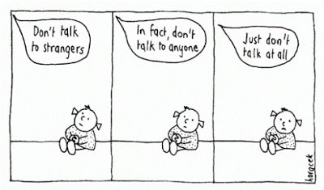

Before the Project was paused, the UI side of the project was 70% complete, with only 4 bugs outstanding and with only one known regression. All in less than 4 sprints...
How was that possible?
How was the project able to gain so much momentum in such a small space of time?
When a commit is made and the resulting build process is successful then the Test Environmetn owner is asked whether it is OK to update the environment with the new change.
As long as there is no critical reason why a feature cannot go into
This means that the coupling between classes is explicitly made during the web project startup routine
This helps us to "prefer composition over inheritance" when we share dependent code. It also helps us to keep to the principal of least knowledge
Another beneficial side effect? It is easier to unit test the business logic